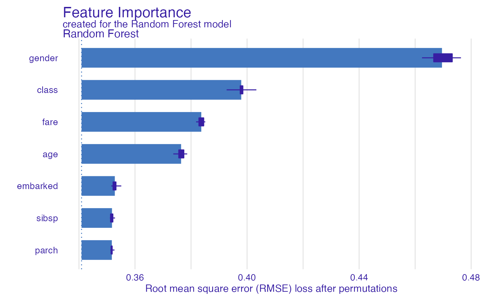
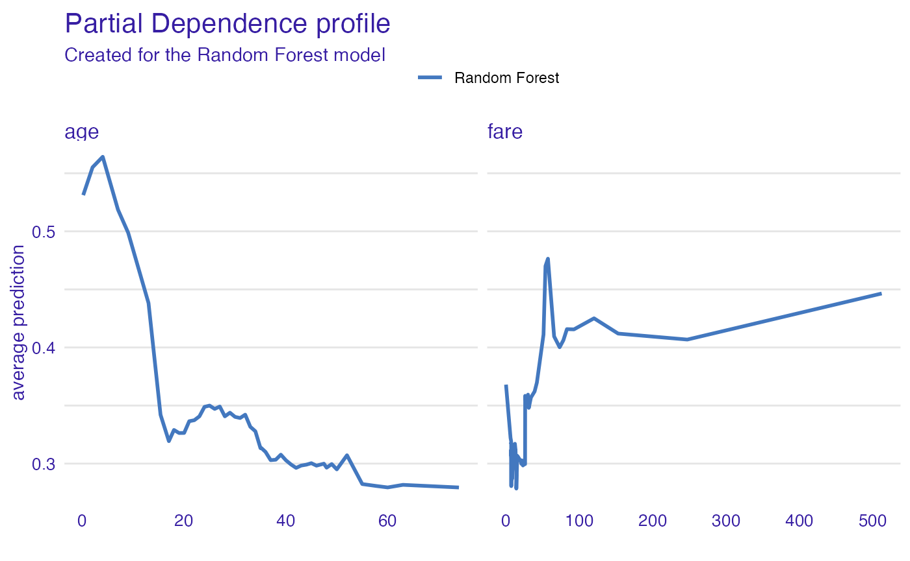
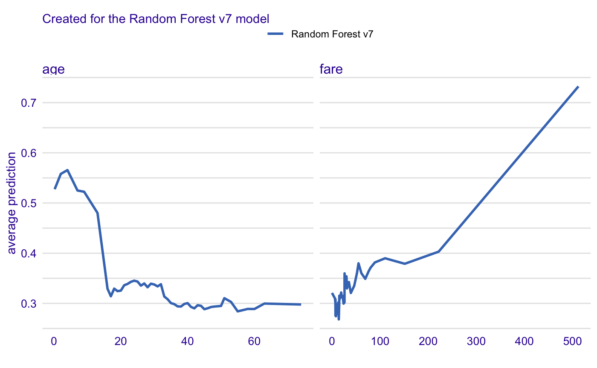
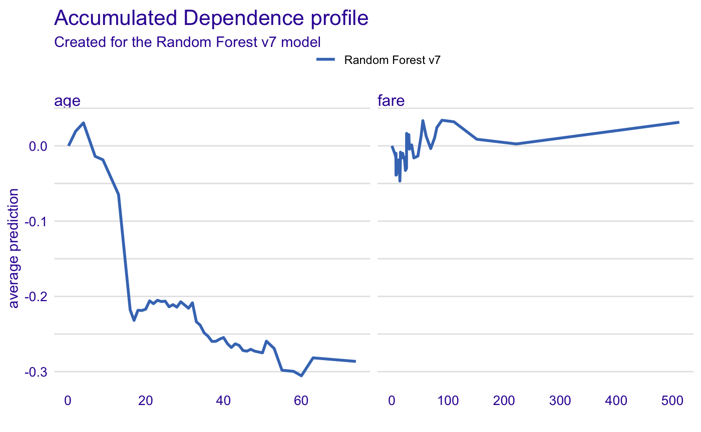
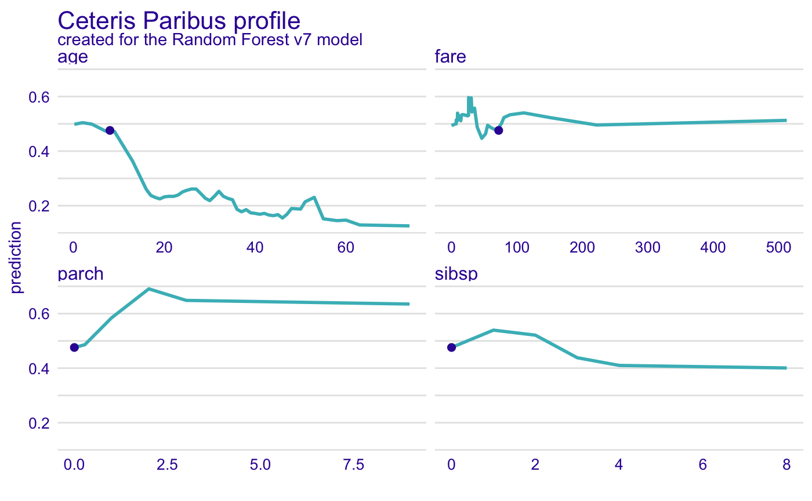
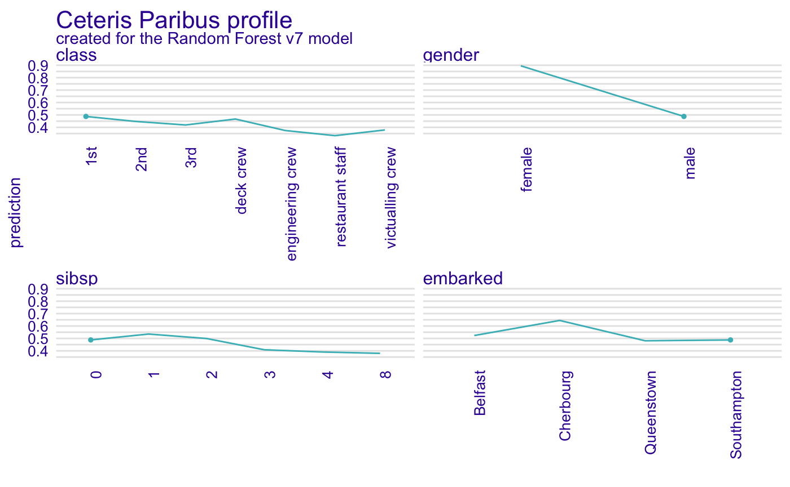
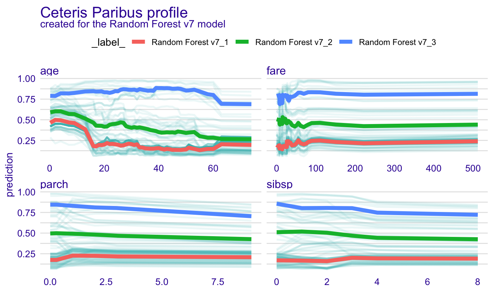

vignettes/vignette_titanic.Rmd
vignette_titanic.RmdLet’s see an example for DALEX package for classification models for the survival problem for Titanic dataset. Here we are using a dataset titanic avaliable in the DALEX package. Note that this data was copied from the stablelearner package.
#> gender age class embarked country fare sibsp parch survived
#> 1 male 42 3rd Southampton United States 7.11 0 0 no
#> 2 male 13 3rd Southampton United States 20.05 0 2 no
#> 3 male 16 3rd Southampton United States 20.05 1 1 no
#> 4 female 39 3rd Southampton England 20.05 1 1 yes
#> 5 female 16 3rd Southampton Norway 7.13 0 0 yes
#> 6 male 25 3rd Southampton United States 7.13 0 0 yesOk, now it’s time to create a model. Let’s use the Random Forest model.
# prepare model library("randomForest") titanic <- na.omit(titanic) model_titanic_rf <- randomForest(survived == "yes" ~ gender + age + class + embarked + fare + sibsp + parch, data = titanic) model_titanic_rf
#>
#> Call:
#> randomForest(formula = survived == "yes" ~ gender + age + class + embarked + fare + sibsp + parch, data = titanic)
#> Type of random forest: regression
#> Number of trees: 500
#> No. of variables tried at each split: 2
#>
#> Mean of squared residuals: 0.1432063
#> % Var explained: 34.66The third step (it’s optional but useful) is to create a DALEX explainer for random forest model.
library("DALEX") explain_titanic_rf <- explain(model_titanic_rf, data = titanic[,-9], y = titanic$survived == "yes", label = "Random Forest v7")
#> Preparation of a new explainer is initiated
#> -> model label : Random Forest v7
#> -> data : 2099 rows 8 cols
#> -> target variable : 2099 values
#> -> predict function : yhat.randomForest will be used ( [33m default [39m )
#> -> predicted values : numerical, min = 0.008855335 , mean = 0.3240762 , max = 0.9916389
#> -> model_info : package randomForest , ver. 4.6.14 , task regression ( [33m default [39m )
#> -> residual function : difference between y and yhat ( [33m default [39m )
#> -> residuals : numerical, min = -0.7882092 , mean = 0.0003640048 , max = 0.8994298
#> [32m A new explainer has been created! [39mUse the feature_importance() explainer to present importance of particular features. Note that type = "difference" normalizes dropouts, and now they all start in 0.
library("ingredients") fi_rf <- feature_importance(explain_titanic_rf) head(fi_rf)
#> variable mean_dropout_loss label
#> 1 _full_model_ 0.3331508 Random Forest v7
#> 2 country 0.3331508 Random Forest v7
#> 3 parch 0.3440386 Random Forest v7
#> 4 sibsp 0.3453652 Random Forest v7
#> 5 embarked 0.3511371 Random Forest v7
#> 6 fare 0.3745531 Random Forest v7plot(fi_rf)

As we see the most important feature is gender. Next three importnat features are class, age and fare. Let’s see the link between model response and these features.
Such univariate relation can be calculated with partial_dependence().
Kids 5 years old and younger have much higher survival probability.
pp_age <- partial_dependence(explain_titanic_rf, variables = c("age", "fare")) head(pp_age)
#> Top profiles :
#> _vname_ _label_ _x_ _yhat_ _ids_
#> 1 fare Random Forest v7 0.0000000 0.3237557 0
#> 2 age Random Forest v7 0.1666667 0.5311401 0
#> 3 age Random Forest v7 2.0000000 0.5573535 0
#> 4 age Random Forest v7 4.0000000 0.5512804 0
#> 5 fare Random Forest v7 6.1904000 0.3051222 0
#> 6 age Random Forest v7 7.0000000 0.5244713 0plot(pp_age)

cp_age <- conditional_dependence(explain_titanic_rf, variables = c("age", "fare")) plot(cp_age)

ap_age <- accumulated_dependence(explain_titanic_rf, variables = c("age", "fare")) plot(ap_age)

Let’s see break down explanation for model predictions for 8 years old male from 1st class that embarked from port C.
First Ceteris Paribus Profiles for numerical variables
new_passanger <- data.frame( class = factor("1st", levels = c("1st", "2nd", "3rd", "deck crew", "engineering crew", "restaurant staff", "victualling crew")), gender = factor("male", levels = c("female", "male")), age = 8, sibsp = 0, parch = 0, fare = 72, embarked = factor("Southampton", levels = c("Belfast", "Cherbourg", "Queenstown", "Southampton")) ) sp_rf <- ceteris_paribus(explain_titanic_rf, new_passanger) plot(sp_rf) + show_observations(sp_rf)

And for selected categorical variables. Note, that sibsp is numerical but here is presented as a categorical variable.

It looks like the most important feature for this passenger is age and sex. After all his odds for survival are higher than for the average passenger. Mainly because of the young age and despite of being a male.
passangers <- select_sample(titanic, n = 100) sp_rf <- ceteris_paribus(explain_titanic_rf, passangers) clust_rf <- cluster_profiles(sp_rf, k = 3) head(clust_rf)
#> Top profiles :
#> _vname_ _label_ _x_ _cluster_ _yhat_ _ids_
#> 1 fare Random Forest v7_1 0.0000000 1 0.1981746 0
#> 2 parch Random Forest v7_1 0.0000000 1 0.1735497 0
#> 3 sibsp Random Forest v7_1 0.0000000 1 0.1708407 0
#> 4 age Random Forest v7_1 0.1666667 1 0.4744995 0
#> 5 parch Random Forest v7_1 0.2800000 1 0.1735497 0
#> 6 parch Random Forest v7_1 1.0000000 1 0.2378018 0plot(sp_rf, alpha = 0.1) + show_aggregated_profiles(clust_rf, color = "_label_", size = 2)

#> R version 4.0.2 (2020-06-22)
#> Platform: x86_64-apple-darwin17.0 (64-bit)
#> Running under: macOS Catalina 10.15.6
#>
#> Matrix products: default
#> BLAS: /Library/Frameworks/R.framework/Versions/4.0/Resources/lib/libRblas.dylib
#> LAPACK: /Library/Frameworks/R.framework/Versions/4.0/Resources/lib/libRlapack.dylib
#>
#> locale:
#> [1] en_US.UTF-8/en_US.UTF-8/en_US.UTF-8/C/en_US.UTF-8/en_US.UTF-8
#>
#> attached base packages:
#> [1] stats graphics grDevices utils datasets methods base
#>
#> other attached packages:
#> [1] ingredients_1.3.1 randomForest_4.6-14 DALEX_1.3.0
#>
#> loaded via a namespace (and not attached):
#> [1] knitr_1.29 magrittr_1.5 MASS_7.3-51.6 munsell_0.5.0
#> [5] colorspace_1.4-1 R6_2.4.1 rlang_0.4.7 stringr_1.4.0
#> [9] tools_4.0.2 grid_4.0.2 gtable_0.3.0 xfun_0.16
#> [13] ellipsis_0.3.1 htmltools_0.5.0 yaml_2.2.1 assertthat_0.2.1
#> [17] digest_0.6.25 rprojroot_1.3-2 tibble_3.0.3 lifecycle_0.2.0
#> [21] pkgdown_1.5.1 crayon_1.3.4 farver_2.0.3 ggplot2_3.3.2
#> [25] vctrs_0.3.2 fs_1.4.2 glue_1.4.1 memoise_1.1.0
#> [29] evaluate_0.14 rmarkdown_2.3 labeling_0.3 stringi_1.4.6
#> [33] pillar_1.4.6 compiler_4.0.2 desc_1.2.0 scales_1.1.1
#> [37] backports_1.1.8 pkgconfig_2.0.3